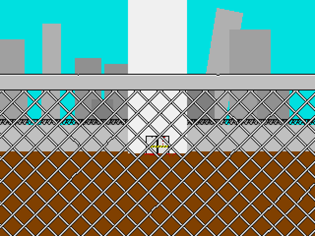

No.71 ザ・エレパンカー |
|
 |
|
| 作者：F-man | |
| ツクール：2000 | |
| ジャンル：ローグライクっぽいなにか | |
| 配信/投稿：おｋ/おｋ | |
| 作者コメント： ポストアポカリプスの皮を被った様な ローグライクライク(Rogue-like-like)未満なRPGで御座います。 一風変わった地味な遊びがしたい人向けです。 バグがありましたら報告お願いします |
|
| 管理人コメント： 視界の狭さが緊張感を生む……！ |
|
| ダウンロード(3.8MB) / 感想掲示板 | |
| 前の作品 / 次の作品 / TOPへ戻る | |